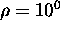

Next:
Introduction
Up:
Mobile Robot Localisation Using
Previous:
Contents
List of Figures
An overview of the method.
Pose constraints in the plane.
Uncertain pose constraints in the plane.
Figure-ground ambiguity in the interpretation of two objects.
A table passing in front of a door.
Detected landmarks in an image.
A cross-section of the density function.
Output of the landmark detector.
The training process.
Landmark prototypes and corresponding eigenlandmarks.
A typical landmark set.
The initial images and landmark candidates.
Tracked landmarks and eigenlandmarks built from the bootstrap image.
Results of adding Figure to the database.
Results of adding Figure to the database.
The final set of a) prototypes and b) principal components for a traversal of the environment depicted in part in Figure .
Landmark-prototype matches for a single image.
The recovery operation.
Convergence properties for a single training set.
Position estimate for a single test image.
Merged ATs.
A set of filtered predictions.
Scene I.
The set of tracked landmarks extracted from Scene I.
Position estimates and corresponding ground truth for twenty random samples from Scene I.
Parameter variation results for Scene I.
Appearance-based estimation error for Scene I.
Individual appearance-based estimation results for Scene I.
Estimation results for edge-based estimation.
Estimation results for edge-based estimation using only appearance.
Scene II.
Scene II pose estimates for 100 test cases,  and
.
Scene II pose estimates for 100 test cases,
and
.
Scene III.
The Nomad 200.
Results for Scene III.
Scene IV.
The RWI with mounted camera.
The set of pose estimates obtained for Scene IV.
Altered Scene IV
Results from altered Scene IV.
The consistency measure plotted as a function of orientation.
Robert Sim
Tue Jul 21 10:30:54 EDT 1998